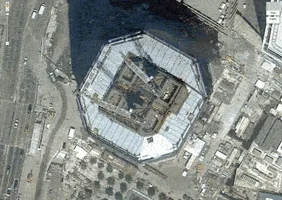

| Aujourd'hui, le lycée Parc de Vilgénis accueille plus de 2400 élèves et étudiants sous statut scolaire et d'apprenti. Outre les formations générales, technologiques STMG et STI2D, l'établissement forme également à 6 baccalauréats professionnels. De nombreuses formations post-bac complètent l'offre avec 11 BTS industriels et tertiaires, 2 licences et 4 Classes Préparatoires aux Grandes Écoles (PTSI, ECG, ECT, ATS). Ces formations s'appuient sur des technologies de pointe et des techniques modernes de gestion commerciale et administrative. | |
|
Contact : Lycée du Parc de Vilgénis 80 rue de Versailles, 91305 Massy Cedex Tél : 01 69 53 74 00 Fax : 01 69 53 74 27 Email : ce.0910727w@ac-versailles.fr |
Plan :  |